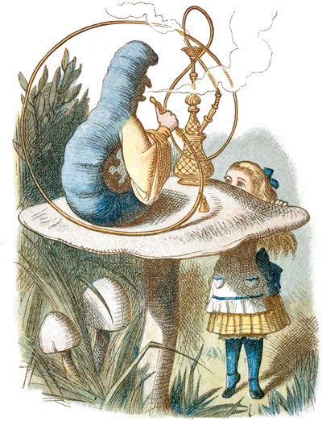
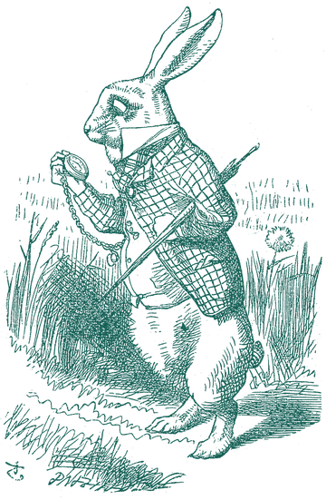

Your model, only smaller.
drinkme runs local AI models with losslessly compressed BF16 weights. They take up a quarter less memory, with every weight preserved bit for bit. That leaves more room for your model and can make generation faster, too.
Qwen3.8-27B drops from 55 GB to 39 GB, enough to fit a single 48 GB GPU, and can generate about 20% faster than it does uncompressed.
“What a curious feeling!” said Alice; “I must be shutting up like a telescope.”
Serve it on your own machine and connect your favourite OpenAI- or Anthropic-compatible client.
Get startedMake room for a bigger model.
The room you save is yours to spend. Fit a model that wouldn’t load before, or keep the one you have and give it a longer context. drinkme has two compression profiles: sip, the default, and gulp, which is a little smaller but slower to decode.
“Now I’m the right size to get through the little door!”
| Model | uncompressed BF16BF16 | sip | gulp |
|---|
Smaller, and often faster.
Where memory bandwidth is the limit, reading fewer bytes makes generation faster, too. Choose a GPU like yours to see how much.
| Model | compressed | uncompressed | speed |
|---|
Let’s get your model running.
You’ll need Linux with an NVIDIA or ROCm-supported AMD GPU, or a Mac with Apple silicon, plus Git and uv. Without a supported GPU, drinkme still runs on the CPU, just slowly.
On the first run, drinkme sets up PyTorch for your GPU and suggests a model that fits your memory. If the model has a published pack, drinkme downloads it, about a quarter smaller than the original, and checks it bit for bit against the original before serving. Otherwise it downloads the original and compresses it on your machine. Either way, it’s kept for next time.
Install & serve
git clone https://tangled.org/ninachaubal.com/drinkme &&cd drinkme &&uv sync &&uv run --no-sync drinkme serveThe first download can be tens of gigabytes. You can choose a different model at the prompt.
Already have a model in mind? Use uv run --no-sync drinkme serve --model Qwen3-8B.
Connect your client
In your client’s provider settings, choose the API it uses and set the base URL:
- OpenAI · Chat Completions & Responses
http://127.0.0.1:3215/v1- Anthropic · Messages
http://127.0.0.1:3215- API key
- Any non-empty value works locally, such as
local. - Model
- The name you served, such as
Qwen3-8B. You can list the models you’re serving withcurl http://127.0.0.1:3215/v1/models.


Curiouser and curiouser? Measure your own.
Memory savings depend mostly on the model. Speed also depends on your hardware, which may not be on the chart yet. Measure it, then share the result so the next person with the same setup knows what to expect.